Summary
This experiment investigates zigbee network formation. Fractional factorial of 5 Zigbee network parameters for join time and stability.
The design varies 5 factors: scan duration exp (exp), ranging from 2 to 7, max children (nodes), ranging from 4 to 20, link cost threshold (cost), ranging from 1 to 7, route table size (entries), ranging from 10 to 50, and poll rate ms (ms), ranging from 100 to 2000. The goal is to optimize 2 responses: join time sec (sec) (minimize) and network stability pct (%) (maximize). Fixed conditions held constant across all runs include zigbee stack = z_stack, channel = 15.
A fractional factorial design reduces the number of runs from 32 to 8 by deliberately confounding higher-order interactions. This is ideal for screening — identifying which of the 5 factors matter most before investing in a full study.
Key Findings
For join time sec, the most influential factors were poll rate ms (51.3%), max children (36.1%), route table size (5.8%). The best observed value was 6.3 (at scan duration exp = 7, max children = 4, link cost threshold = 1).
For network stability pct, the most influential factors were scan duration exp (41.3%), max children (29.3%), poll rate ms (13.4%). The best observed value was 99.5 (at scan duration exp = 7, max children = 4, link cost threshold = 1).
Recommended Next Steps
- Follow up with a response surface design (CCD or Box-Behnken) on the top 3–4 factors to model curvature and find the true optimum.
- Consider whether any fixed factors should be varied in a future study.
- The screening results can guide factor reduction — drop factors contributing less than 5% and re-run with a smaller, more focused design.
Experimental Setup
Factors
| Factor | Low | High | Unit |
|---|
scan_duration_exp | 2 | 7 | exp |
max_children | 4 | 20 | nodes |
link_cost_threshold | 1 | 7 | cost |
route_table_size | 10 | 50 | entries |
poll_rate_ms | 100 | 2000 | ms |
Fixed: zigbee_stack = z_stack, channel = 15
Responses
| Response | Direction | Unit |
|---|
join_time_sec | ↓ minimize | sec |
network_stability_pct | ↑ maximize | % |
Configuration
{
"metadata": {
"name": "Zigbee Network Formation",
"description": "Fractional factorial of 5 Zigbee network parameters for join time and stability"
},
"factors": [
{
"name": "scan_duration_exp",
"levels": [
"2",
"7"
],
"type": "continuous",
"unit": "exp"
},
{
"name": "max_children",
"levels": [
"4",
"20"
],
"type": "continuous",
"unit": "nodes"
},
{
"name": "link_cost_threshold",
"levels": [
"1",
"7"
],
"type": "continuous",
"unit": "cost"
},
{
"name": "route_table_size",
"levels": [
"10",
"50"
],
"type": "continuous",
"unit": "entries"
},
{
"name": "poll_rate_ms",
"levels": [
"100",
"2000"
],
"type": "continuous",
"unit": "ms"
}
],
"fixed_factors": {
"zigbee_stack": "z_stack",
"channel": "15"
},
"responses": [
{
"name": "join_time_sec",
"optimize": "minimize",
"unit": "sec"
},
{
"name": "network_stability_pct",
"optimize": "maximize",
"unit": "%"
}
],
"settings": {
"operation": "fractional_factorial",
"test_script": "use_cases/74_zigbee_network_formation/sim.sh"
}
}
Experimental Matrix
The Fractional Factorial Design produces 8 runs. Each row is one experiment with specific factor settings.
| Run | scan_duration_exp | max_children | link_cost_threshold | route_table_size | poll_rate_ms |
|---|
| 1 | 2 | 20 | 7 | 10 | 100 |
| 2 | 7 | 4 | 1 | 10 | 100 |
| 3 | 7 | 20 | 1 | 50 | 100 |
| 4 | 7 | 20 | 7 | 50 | 2000 |
| 5 | 2 | 20 | 1 | 10 | 2000 |
| 6 | 7 | 4 | 7 | 10 | 2000 |
| 7 | 2 | 4 | 1 | 50 | 2000 |
| 8 | 2 | 4 | 7 | 50 | 100 |
Step-by-Step Workflow
1
Preview the design
$ doe info --config use_cases/74_zigbee_network_formation/config.json
2
Generate the runner script
$ doe generate --config use_cases/74_zigbee_network_formation/config.json \
--output use_cases/74_zigbee_network_formation/results/run.sh --seed 42
3
Execute the experiments
$ bash use_cases/74_zigbee_network_formation/results/run.sh
4
Analyze results
$ doe analyze --config use_cases/74_zigbee_network_formation/config.json
5
Get optimization recommendations
$ doe optimize --config use_cases/74_zigbee_network_formation/config.json
6
Multi-objective optimization
With 2 competing responses, use --multi to find the best compromise via Derringer–Suich desirability.
$ doe optimize --config use_cases/74_zigbee_network_formation/config.json --multi
7
Generate the HTML report
$ doe report --config use_cases/74_zigbee_network_formation/config.json \
--output use_cases/74_zigbee_network_formation/results/report.html
Features Exercised
| Feature | Value |
|---|
| Design type | fractional_factorial |
| Factor types | continuous (all 5) |
| Arg style | double-dash |
| Responses | 2 (join_time_sec ↓, network_stability_pct ↑) |
| Total runs | 8 |
Analysis Results
Generated from actual experiment runs using the DOE Helper Tool.
Response: join_time_sec
Top factors: poll_rate_ms (51.3%), max_children (36.1%), route_table_size (5.8%).
ANOVA
| Source | DF | SS | MS | F | p-value |
|---|
| Source | DF | SS | MS | F | p-value |
| scan_duration_exp | 1 | 3.3800 | 3.3800 | 0.618 | 0.4673 |
| max_children | 1 | 141.1200 | 141.1200 | 25.811 | 0.0038 |
| link_cost_threshold | 1 | 0.1800 | 0.1800 | 0.033 | 0.8631 |
| route_table_size | 1 | 3.6450 | 3.6450 | 0.667 | 0.4513 |
| poll_rate_ms | 1 | 285.6050 | 285.6050 | 52.237 | 0.0008 |
| scan_duration_exp*max_children | 1 | 3.6450 | 3.6450 | 0.667 | 0.4513 |
| scan_duration_exp*link_cost_threshold | 1 | 285.6050 | 285.6050 | 52.237 | 0.0008 |
| scan_duration_exp*route_table_size | 1 | 141.1200 | 141.1200 | 25.811 | 0.0038 |
| scan_duration_exp*poll_rate_ms | 1 | 0.1800 | 0.1800 | 0.033 | 0.8631 |
| max_children*link_cost_threshold | 1 | 29.6450 | 29.6450 | 5.422 | 0.0673 |
| max_children*route_table_size | 1 | 3.3800 | 3.3800 | 0.618 | 0.4673 |
| max_children*poll_rate_ms | 1 | 32.0000 | 32.0000 | 5.853 | 0.0602 |
| link_cost_threshold*route_table_size | 1 | 32.0000 | 32.0000 | 5.853 | 0.0602 |
| link_cost_threshold*poll_rate_ms | 1 | 3.3800 | 3.3800 | 0.618 | 0.4673 |
| route_table_size*poll_rate_ms | 1 | 29.6450 | 29.6450 | 5.422 | 0.0673 |
| Error | (Lenth | PSE) | 5 | 27.3375 | 5.4675 |
| Total | 7 | 495.5750 | 70.7964 | | |
Pareto Chart
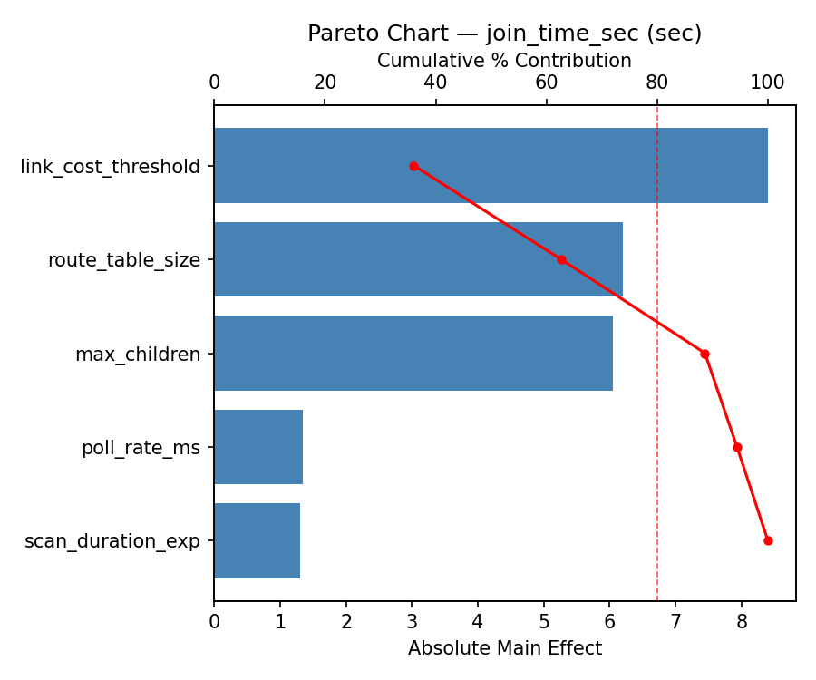
Main Effects Plot

Normal Probability Plot of Effects
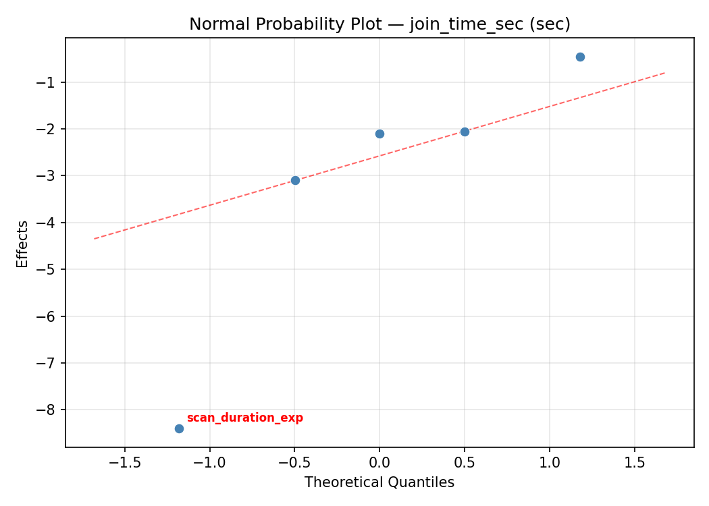
Half-Normal Plot of Effects
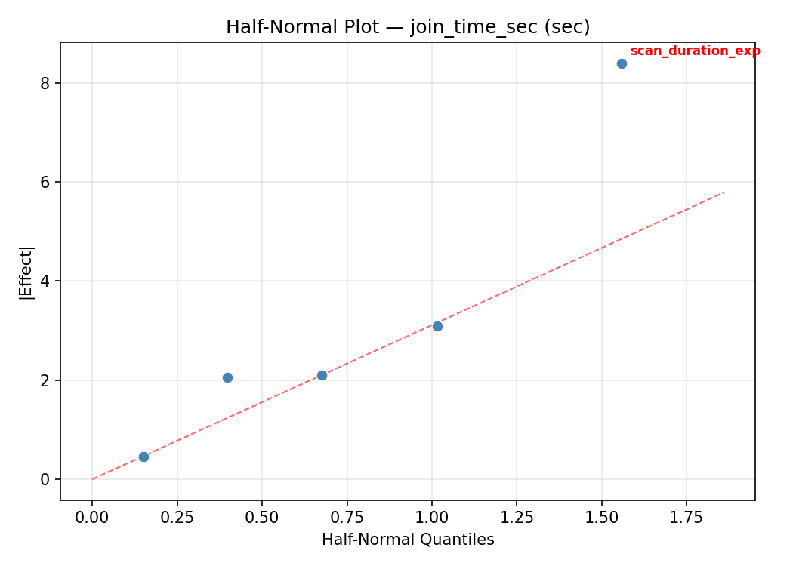
Model Diagnostics

Response: network_stability_pct
Top factors: scan_duration_exp (41.3%), max_children (29.3%), poll_rate_ms (13.4%).
ANOVA
| Source | DF | SS | MS | F | p-value |
|---|
| Source | DF | SS | MS | F | p-value |
| scan_duration_exp | 1 | 221.5513 | 221.5513 | 5.443 | 0.0670 |
| max_children | 1 | 111.7512 | 111.7512 | 2.745 | 0.1584 |
| link_cost_threshold | 1 | 10.8113 | 10.8113 | 0.266 | 0.6283 |
| route_table_size | 1 | 5.9512 | 5.9512 | 0.146 | 0.7179 |
| poll_rate_ms | 1 | 23.4612 | 23.4612 | 0.576 | 0.4820 |
| scan_duration_exp*max_children | 1 | 5.9512 | 5.9512 | 0.146 | 0.7179 |
| scan_duration_exp*link_cost_threshold | 1 | 23.4612 | 23.4612 | 0.576 | 0.4820 |
| scan_duration_exp*route_table_size | 1 | 111.7512 | 111.7512 | 2.745 | 0.1584 |
| scan_duration_exp*poll_rate_ms | 1 | 10.8113 | 10.8113 | 0.266 | 0.6283 |
| max_children*link_cost_threshold | 1 | 78.7513 | 78.7513 | 1.935 | 0.2230 |
| max_children*route_table_size | 1 | 221.5513 | 221.5513 | 5.443 | 0.0670 |
| max_children*poll_rate_ms | 1 | 30.8113 | 30.8113 | 0.757 | 0.4241 |
| link_cost_threshold*route_table_size | 1 | 30.8113 | 30.8113 | 0.757 | 0.4241 |
| link_cost_threshold*poll_rate_ms | 1 | 221.5513 | 221.5513 | 5.443 | 0.0670 |
| route_table_size*poll_rate_ms | 1 | 78.7513 | 78.7513 | 1.935 | 0.2230 |
| Error | (Lenth | PSE) | 5 | 203.5219 | 40.7044 |
| Total | 7 | 483.0888 | 69.0127 | | |
Pareto Chart

Main Effects Plot

Normal Probability Plot of Effects
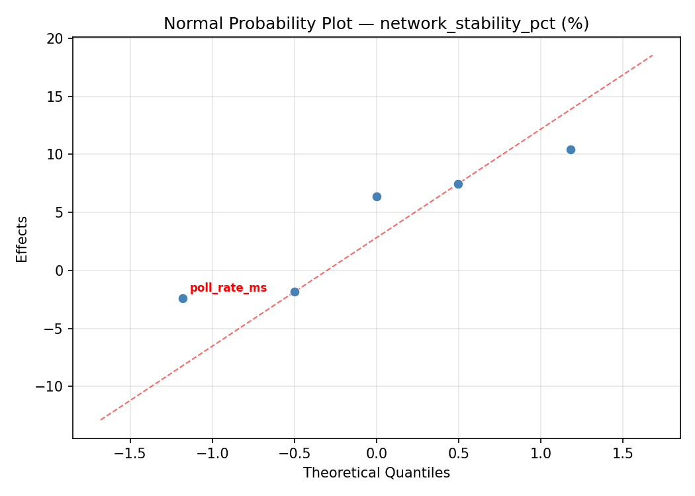
Half-Normal Plot of Effects

Model Diagnostics
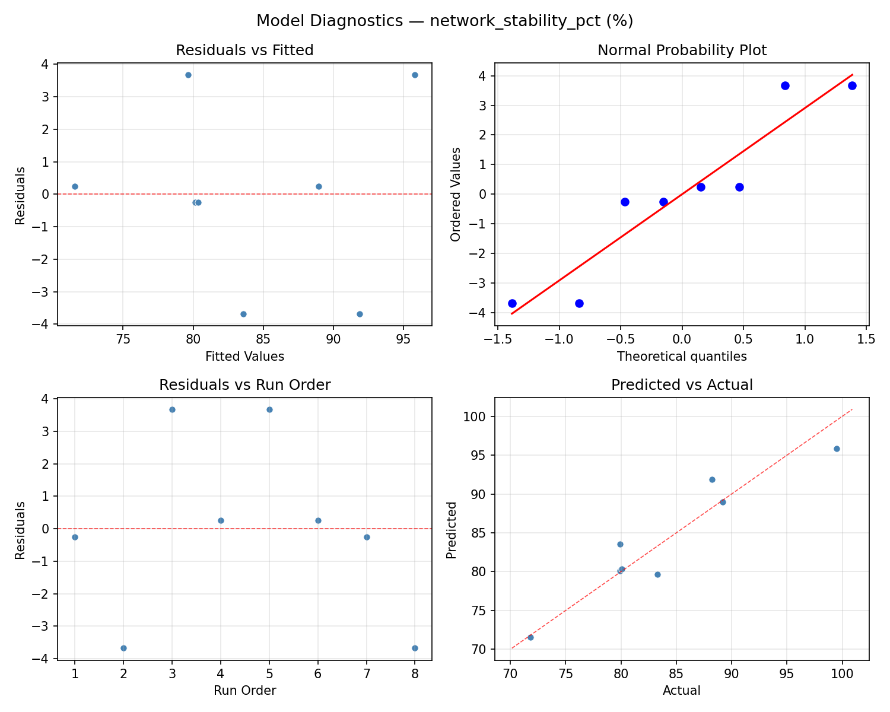
Response Surface Plots
3D surfaces fitted with quadratic RSM. Red dots are observed data points.
join time sec link cost threshold vs poll rate ms
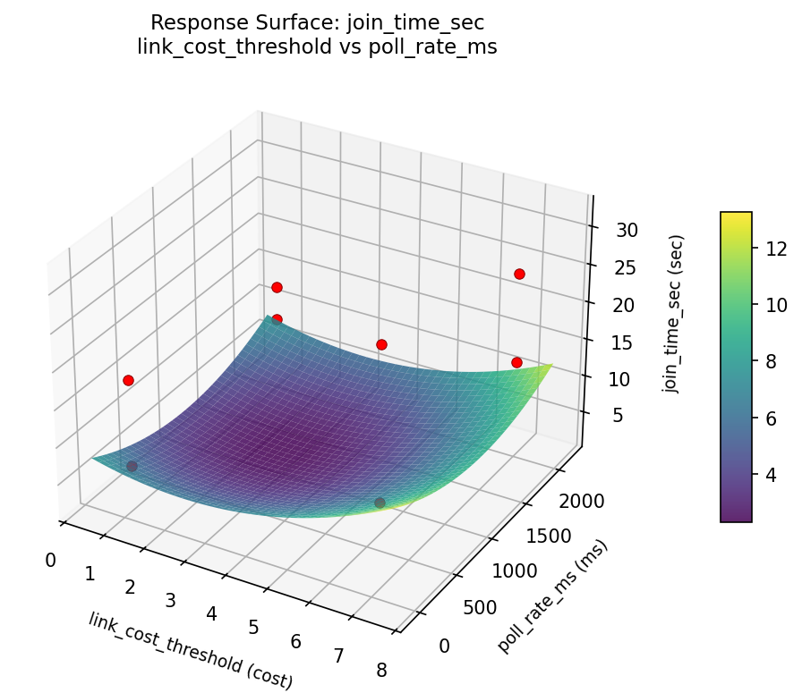
join time sec link cost threshold vs route table size
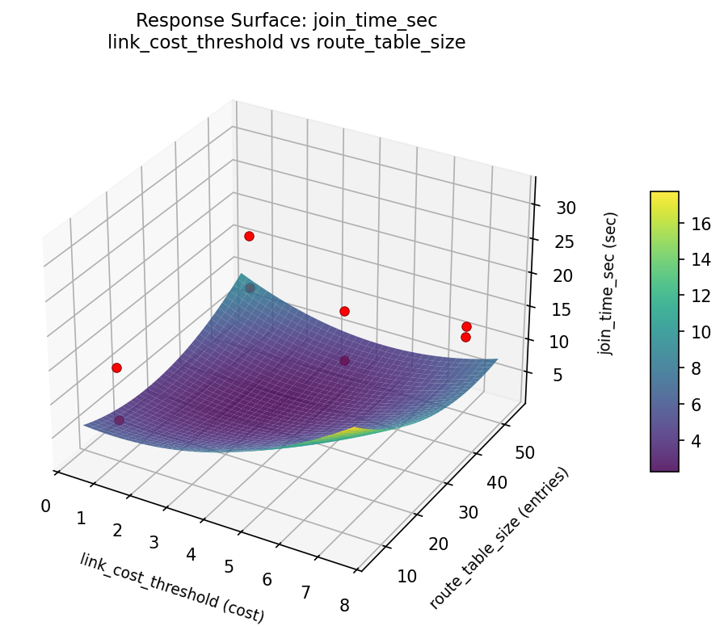
join time sec max children vs link cost threshold

join time sec max children vs poll rate ms
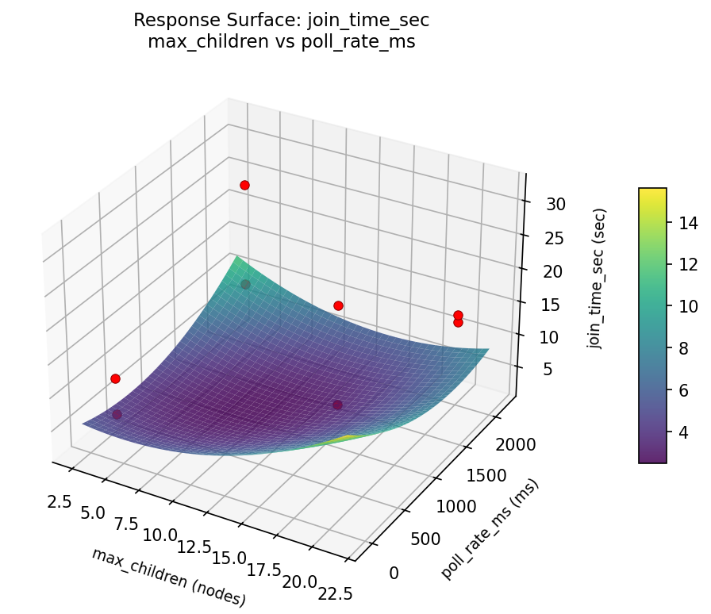
join time sec max children vs route table size
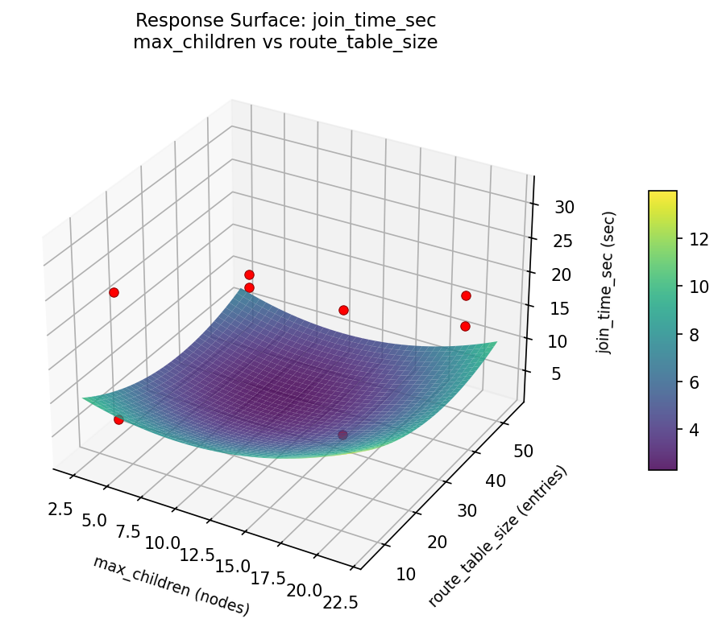
join time sec route table size vs poll rate ms

join time sec scan duration exp vs link cost threshold

join time sec scan duration exp vs max children

join time sec scan duration exp vs poll rate ms

join time sec scan duration exp vs route table size
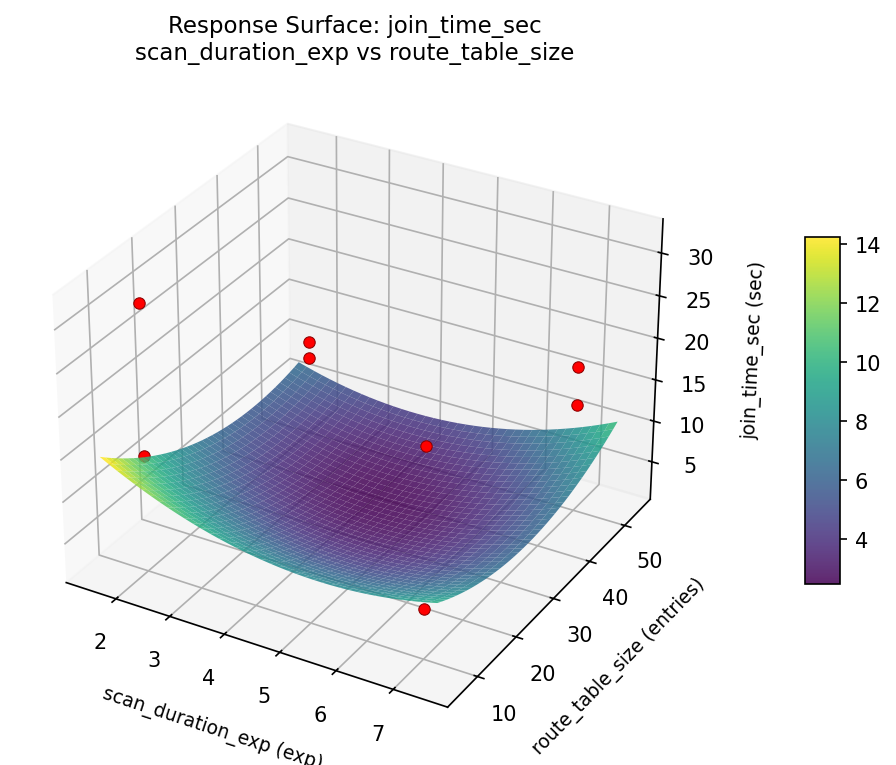
network stability pct link cost threshold vs poll rate ms

network stability pct link cost threshold vs route table size
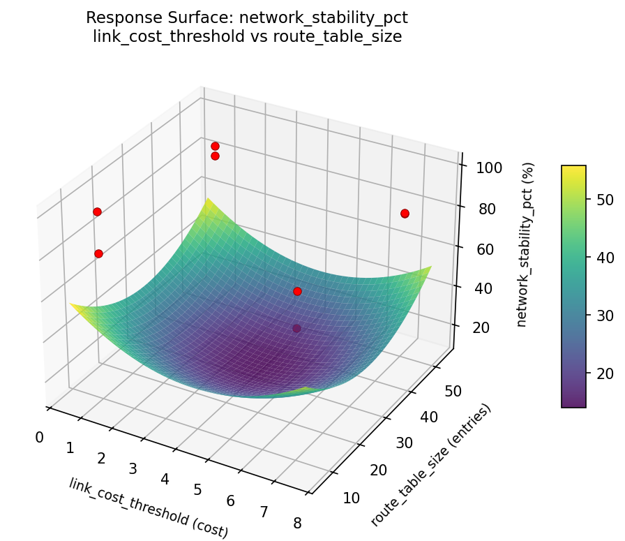
network stability pct max children vs link cost threshold

network stability pct max children vs poll rate ms

network stability pct max children vs route table size

network stability pct route table size vs poll rate ms

network stability pct scan duration exp vs link cost threshold
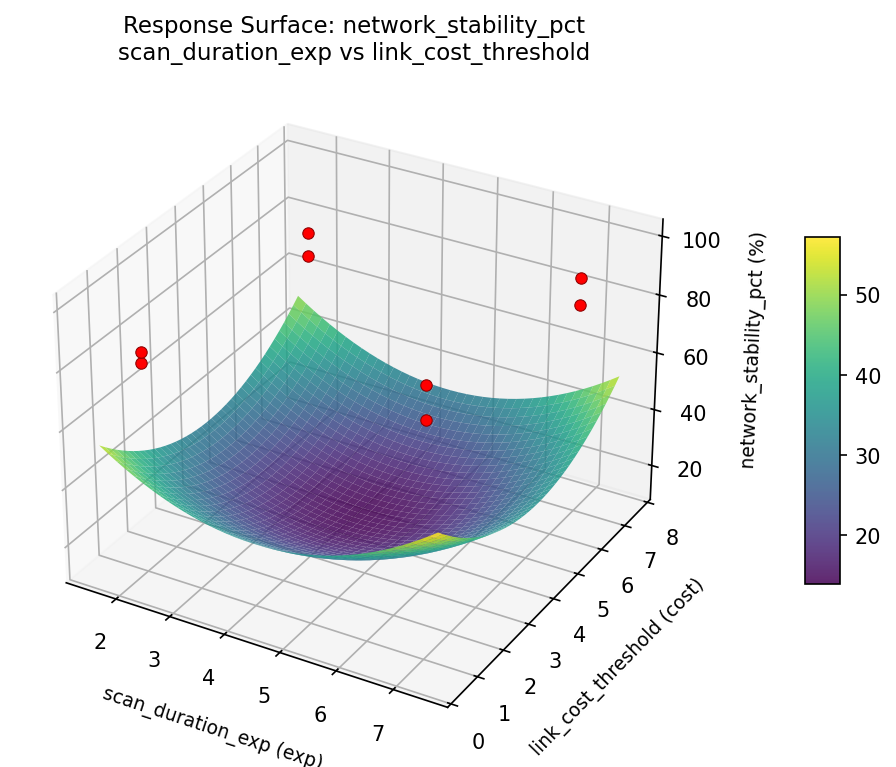
network stability pct scan duration exp vs max children
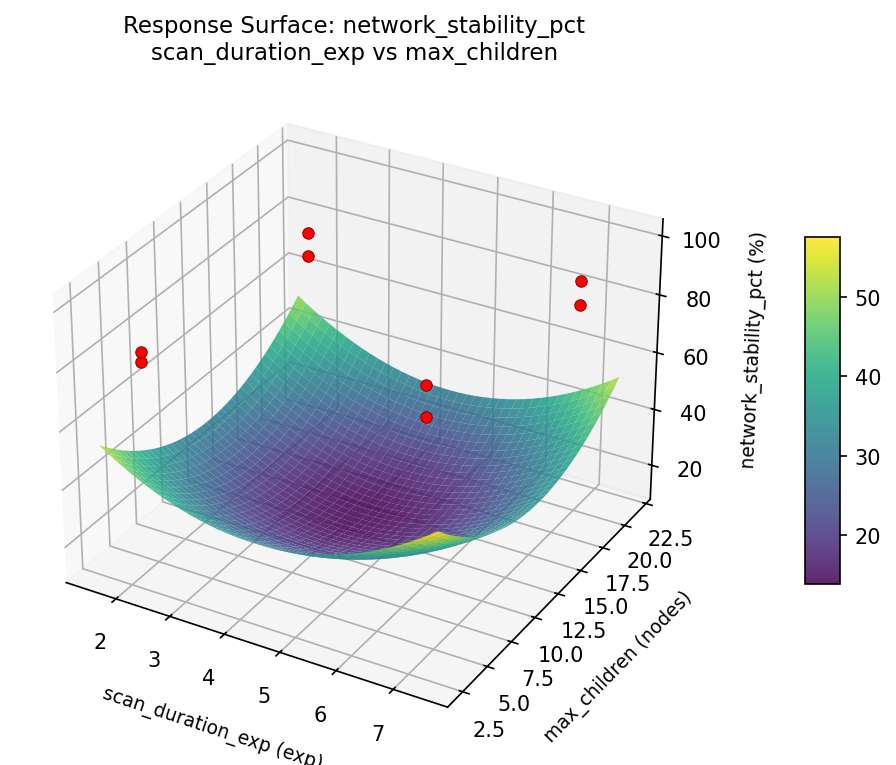
network stability pct scan duration exp vs poll rate ms

network stability pct scan duration exp vs route table size

Multi-Objective Optimization
When responses compete, Derringer–Suich desirability finds the best compromise.
Each response is scaled to a 0–1 desirability, then combined via a weighted geometric mean.
Overall Desirability
D = 0.9545
Per-Response Desirability
| Response | Weight | Desirability | Predicted | Dir |
|---|
join_time_sec |
1.0 |
|
6.30 0.9545 6.30 sec |
↓ |
network_stability_pct |
1.5 |
|
99.50 0.9545 99.50 % |
↑ |
Recommended Settings
| Factor | Value |
|---|
scan_duration_exp | 2 exp |
max_children | 20 nodes |
link_cost_threshold | 1 cost |
route_table_size | 10 entries |
poll_rate_ms | 2000 ms |
Source: from observed run #3
Trade-off Summary
Sacrifice = how much worse than single-objective best.
| Response | Predicted | Best Observed | Sacrifice |
|---|
network_stability_pct | 99.50 | 99.50 | +0.00 |
Top 3 Runs by Desirability
| Run | D | Factor Settings |
|---|
| #2 | 0.5677 | scan_duration_exp=2, max_children=4, link_cost_threshold=7, route_table_size=50, poll_rate_ms=100 |
| #5 | 0.5537 | scan_duration_exp=2, max_children=4, link_cost_threshold=1, route_table_size=50, poll_rate_ms=2000 |
Model Quality
| Response | R² | Type |
|---|
network_stability_pct | 0.5363 | linear |
Full Multi-Objective Output
============================================================
MULTI-OBJECTIVE OPTIMIZATION
Method: Derringer-Suich Desirability Function
============================================================
Overall desirability: D = 0.9545
Response Weight Desirability Predicted Direction
---------------------------------------------------------------------
join_time_sec 1.0 0.9545 6.30 sec ↓
network_stability_pct 1.5 0.9545 99.50 % ↑
Recommended settings:
scan_duration_exp = 2 exp
max_children = 20 nodes
link_cost_threshold = 1 cost
route_table_size = 10 entries
poll_rate_ms = 2000 ms
(from observed run #3)
Trade-off summary:
join_time_sec: 6.30 (best observed: 6.30, sacrifice: +0.00)
network_stability_pct: 99.50 (best observed: 99.50, sacrifice: +0.00)
Model quality:
join_time_sec: R² = 0.9652 (linear)
network_stability_pct: R² = 0.5363 (linear)
Top 3 observed runs by overall desirability:
1. Run #3 (D=0.9545): scan_duration_exp=2, max_children=20, link_cost_threshold=1, route_table_size=10, poll_rate_ms=2000
2. Run #2 (D=0.5677): scan_duration_exp=2, max_children=4, link_cost_threshold=7, route_table_size=50, poll_rate_ms=100
3. Run #5 (D=0.5537): scan_duration_exp=2, max_children=4, link_cost_threshold=1, route_table_size=50, poll_rate_ms=2000
Full Analysis Output
=== Main Effects: join_time_sec ===
Factor Effect Std Error % Contribution
--------------------------------------------------------------
poll_rate_ms -11.9500 2.9748 51.3%
max_children -8.4000 2.9748 36.1%
route_table_size 1.3500 2.9748 5.8%
scan_duration_exp 1.3000 2.9748 5.6%
link_cost_threshold -0.3000 2.9748 1.3%
=== ANOVA Table: join_time_sec ===
Source DF SS MS F p-value
-----------------------------------------------------------------------------
scan_duration_exp 1 3.3800 3.3800 0.618 0.4673
max_children 1 141.1200 141.1200 25.811 0.0038
link_cost_threshold 1 0.1800 0.1800 0.033 0.8631
route_table_size 1 3.6450 3.6450 0.667 0.4513
poll_rate_ms 1 285.6050 285.6050 52.237 0.0008
scan_duration_exp*max_children 1 3.6450 3.6450 0.667 0.4513
scan_duration_exp*link_cost_threshold 1 285.6050 285.6050 52.237 0.0008
scan_duration_exp*route_table_size 1 141.1200 141.1200 25.811 0.0038
scan_duration_exp*poll_rate_ms 1 0.1800 0.1800 0.033 0.8631
max_children*link_cost_threshold 1 29.6450 29.6450 5.422 0.0673
max_children*route_table_size 1 3.3800 3.3800 0.618 0.4673
max_children*poll_rate_ms 1 32.0000 32.0000 5.853 0.0602
link_cost_threshold*route_table_size 1 32.0000 32.0000 5.853 0.0602
link_cost_threshold*poll_rate_ms 1 3.3800 3.3800 0.618 0.4673
route_table_size*poll_rate_ms 1 29.6450 29.6450 5.422 0.0673
Error (Lenth PSE) 5 27.3375 5.4675
Total 7 495.5750 70.7964
Note: Error estimated using Lenth's pseudo-standard-error (unreplicated design)
=== Interaction Effects: join_time_sec ===
Factor A Factor B Interaction % Contribution
------------------------------------------------------------------------
scan_duration_exp link_cost_threshold -11.9500 29.7%
scan_duration_exp route_table_size 8.4000 20.8%
max_children poll_rate_ms 4.0000 9.9%
link_cost_threshold route_table_size -4.0000 9.9%
max_children link_cost_threshold 3.8500 9.6%
route_table_size poll_rate_ms -3.8500 9.6%
scan_duration_exp max_children -1.3500 3.3%
max_children route_table_size -1.3000 3.2%
link_cost_threshold poll_rate_ms 1.3000 3.2%
scan_duration_exp poll_rate_ms -0.3000 0.7%
=== Summary Statistics: join_time_sec ===
scan_duration_exp:
Level N Mean Std Min Max
------------------------------------------------------------
2 4 15.5750 7.8623 6.3000 25.0000
7 4 16.8750 10.1118 9.8000 31.8000
max_children:
Level N Mean Std Min Max
------------------------------------------------------------
20 4 20.4250 9.6376 11.7000 31.8000
4 4 12.0250 5.0268 6.3000 17.8000
link_cost_threshold:
Level N Mean Std Min Max
------------------------------------------------------------
1 4 16.3750 10.8666 6.3000 31.8000
7 4 16.0750 6.8592 9.8000 25.0000
route_table_size:
Level N Mean Std Min Max
------------------------------------------------------------
10 4 15.5500 6.5755 9.8000 25.0000
50 4 16.9000 10.9882 6.3000 31.8000
poll_rate_ms:
Level N Mean Std Min Max
------------------------------------------------------------
100 4 22.2000 7.8179 14.2000 31.8000
2000 4 10.2500 2.9783 6.3000 13.2000
=== Main Effects: network_stability_pct ===
Factor Effect Std Error % Contribution
--------------------------------------------------------------
scan_duration_exp -10.5250 2.9371 41.3%
max_children 7.4750 2.9371 29.3%
poll_rate_ms 3.4250 2.9371 13.4%
link_cost_threshold 2.3250 2.9371 9.1%
route_table_size 1.7250 2.9371 6.8%
=== ANOVA Table: network_stability_pct ===
Source DF SS MS F p-value
-----------------------------------------------------------------------------
scan_duration_exp 1 221.5513 221.5513 5.443 0.0670
max_children 1 111.7512 111.7512 2.745 0.1584
link_cost_threshold 1 10.8113 10.8113 0.266 0.6283
route_table_size 1 5.9512 5.9512 0.146 0.7179
poll_rate_ms 1 23.4612 23.4612 0.576 0.4820
scan_duration_exp*max_children 1 5.9512 5.9512 0.146 0.7179
scan_duration_exp*link_cost_threshold 1 23.4612 23.4612 0.576 0.4820
scan_duration_exp*route_table_size 1 111.7512 111.7512 2.745 0.1584
scan_duration_exp*poll_rate_ms 1 10.8113 10.8113 0.266 0.6283
max_children*link_cost_threshold 1 78.7513 78.7513 1.935 0.2230
max_children*route_table_size 1 221.5513 221.5513 5.443 0.0670
max_children*poll_rate_ms 1 30.8113 30.8113 0.757 0.4241
link_cost_threshold*route_table_size 1 30.8113 30.8113 0.757 0.4241
link_cost_threshold*poll_rate_ms 1 221.5513 221.5513 5.443 0.0670
route_table_size*poll_rate_ms 1 78.7513 78.7513 1.935 0.2230
Error (Lenth PSE) 5 203.5219 40.7044
Total 7 483.0888 69.0127
Note: Error estimated using Lenth's pseudo-standard-error (unreplicated design)
=== Interaction Effects: network_stability_pct ===
Factor A Factor B Interaction % Contribution
------------------------------------------------------------------------
max_children route_table_size 10.5250 18.7%
link_cost_threshold poll_rate_ms -10.5250 18.7%
scan_duration_exp route_table_size -7.4750 13.3%
max_children link_cost_threshold -6.2750 11.1%
route_table_size poll_rate_ms 6.2750 11.1%
max_children poll_rate_ms 3.9250 7.0%
link_cost_threshold route_table_size -3.9250 7.0%
scan_duration_exp link_cost_threshold 3.4250 6.1%
scan_duration_exp poll_rate_ms 2.3250 4.1%
scan_duration_exp max_children -1.7250 3.1%
=== Summary Statistics: network_stability_pct ===
scan_duration_exp:
Level N Mean Std Min Max
------------------------------------------------------------
2 4 89.2500 7.9559 80.1000 99.5000
7 4 78.7250 4.8870 71.8000 83.3000
max_children:
Level N Mean Std Min Max
------------------------------------------------------------
20 4 80.2500 7.1099 71.8000 89.2000
4 4 87.7250 8.5574 79.9000 99.5000
link_cost_threshold:
Level N Mean Std Min Max
------------------------------------------------------------
1 4 82.8250 11.7698 71.8000 99.5000
7 4 85.1500 4.3470 79.9000 89.2000
route_table_size:
Level N Mean Std Min Max
------------------------------------------------------------
10 4 83.1250 4.3393 79.9000 89.2000
50 4 84.8500 11.8413 71.8000 99.5000
poll_rate_ms:
Level N Mean Std Min Max
------------------------------------------------------------
100 4 82.2750 8.1328 71.8000 89.2000
2000 4 85.7000 9.3310 79.9000 99.5000
Optimization Recommendations
=== Optimization: join_time_sec ===
Direction: minimize
Best observed run: #3
scan_duration_exp = 7
max_children = 4
link_cost_threshold = 1
route_table_size = 10
poll_rate_ms = 100
Value: 6.3
RSM Model (linear, R² = 0.9364, Adj R² = 0.7774):
Coefficients:
intercept +16.2250
scan_duration_exp -3.9750
max_children -2.8500
link_cost_threshold +1.9250
route_table_size +5.3500
poll_rate_ms +1.3250
Predicted optimum (from linear model, at observed points):
scan_duration_exp = 2
max_children = 4
link_cost_threshold = 7
route_table_size = 50
poll_rate_ms = 100
Predicted value: 29.0000
Surface optimum (via L-BFGS-B, linear model):
scan_duration_exp = 7
max_children = 20
link_cost_threshold = 1
route_table_size = 10
poll_rate_ms = 100
Predicted value: 0.8000
Model quality: Excellent fit — surface predictions are reliable.
Factor importance:
1. route_table_size (effect: 10.7, contribution: 34.7%)
2. scan_duration_exp (effect: -7.9, contribution: 25.8%)
3. max_children (effect: 5.7, contribution: 18.5%)
4. link_cost_threshold (effect: 3.8, contribution: 12.5%)
5. poll_rate_ms (effect: 2.7, contribution: 8.6%)
=== Optimization: network_stability_pct ===
Direction: maximize
Best observed run: #3
scan_duration_exp = 7
max_children = 4
link_cost_threshold = 1
route_table_size = 10
poll_rate_ms = 100
Value: 99.5
RSM Model (linear, R² = 0.3790, Adj R² = -1.1734):
Coefficients:
intercept +83.9875
scan_duration_exp +2.9375
max_children -1.1625
link_cost_threshold -3.1375
route_table_size -1.7125
poll_rate_ms +0.3625
Predicted optimum (from linear model, at observed points):
scan_duration_exp = 7
max_children = 4
link_cost_threshold = 1
route_table_size = 10
poll_rate_ms = 100
Predicted value: 92.5750
Surface optimum (via L-BFGS-B, linear model):
scan_duration_exp = 7
max_children = 4
link_cost_threshold = 1
route_table_size = 10
poll_rate_ms = 2000
Predicted value: 93.3000
Model quality: Weak fit — consider adding center points or using a different design.
Factor importance:
1. link_cost_threshold (effect: -6.3, contribution: 33.7%)
2. scan_duration_exp (effect: 5.9, contribution: 31.5%)
3. route_table_size (effect: -3.4, contribution: 18.4%)
4. max_children (effect: 2.3, contribution: 12.5%)
5. poll_rate_ms (effect: 0.7, contribution: 3.9%)